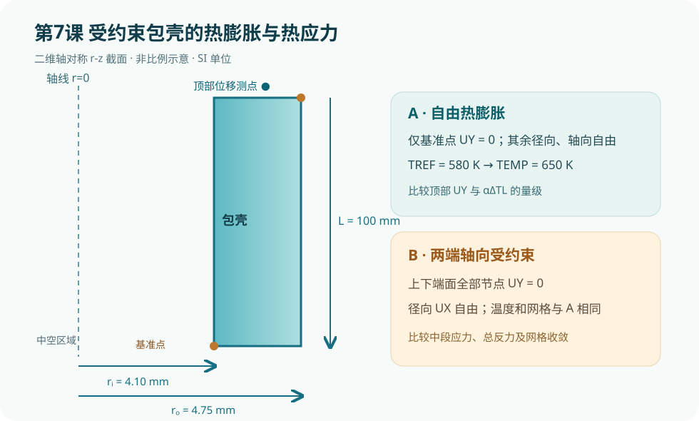

{kind=link}
验证状态：已静态检查，尚未运行 MAPDL
已按 Ansys 2026 R1 官方 PLANE182、BFUNIF、DDELE 文档静态核对轴对称选项、温度载荷与边界切换；已核对 SI 单位和每条可执行命令的行尾中文注释。本机未运行 MAPDL，故不提供计算数值。

今日目标
用同一包壳轴对称模型比较“仅消除刚体位移”和“两端轴向受约束”两种边界条件，理解温升本身与热膨胀受限如何分别影响位移和热应力。
物理问题
以燃料棒包壳为背景，建立内半径 4.10 mm、外半径 4.75 mm、轴向长度 100 mm 的中空圆柱二维 r-z 截面。用 PLANE182 轴对称结构单元，初始无应变温度为 580 K，工作温度为 650 K。统一使用 SI 单位：m、kg、s、K、Pa。教学材料参数为 E=100 GPa、ν=0.33、α=5.5×10⁻⁶ K⁻¹，并非特定包壳牌号的真实材料数据。
工况 A 仅固定底部内壁角点的轴向位移，抑制整体沿轴向平移，允许径向及轴向热膨胀；工况 B 将上下端面全部节点的 UY 固定，限制轴向热膨胀。包壳位于 r>0 的环形区域，径向不应额外固定为零。两个工况使用同一网格和同一温度，差别仅为轴向约束。该均匀温度、线弹性、无接触模型适合演示边界条件影响，不用于真实燃料棒寿命或安全评价。
关键命令
ET,1,PLANE182与KEYOPT,1,3,1：定义轴对称二维结构单元，X 对应径向，Y 对应轴向。MP,EX/PRXY/ALPX：分别设置弹性模量、泊松比与线膨胀系数。RECTNG、ESIZE、AMESH：建立包壳截面并划分网格。NSEL,S/R/A,LOC,...：按位置筛选角点或两端面节点；每次施加载荷后用ALLSEL,ALL恢复选择集。TREF：给出热应变零参考温度；BFUNIF,TEMP：给没有指定其他体温载荷的单元提供均匀温度。D与DDELE：施加和删除位移约束，以便在同一网格上切换工况。SOLVE、SET,LAST、*GET：求解并提取轴向位移与节点等效应力。
分析流程
- 建立轴对称包壳截面，记录底部内壁基准节点和顶部外壁测点。
- 设置
TREF=580 K、BFUNIF,TEMP,650 K，仅约束基准节点UY=0，求解自由膨胀工况。 - 读取顶部测点
UY和最大等效应力；删除该单点约束，把上下端全部节点UY=0，再求解受约束工况。 - 比较两工况结果和云图，并通过反力、网格细化及解析量级检验判断边界是否正确。
完整脚本
下载同目录的 [example.inp](example.inp)。每条可执行命令及参数行均有中文行尾注释；*VWRITE 后的 FORTRAN 格式描述符按 APDL 语法保留为纯格式行。
预期结果
自由工况顶部轴向位移的量级应接近 αΔT L = 5.5×10⁻⁶×70×0.10 ≈ 3.85×10⁻⁵ m，外半径自由径向位移量级约 αΔT r_o ≈ 1.83×10⁻⁶ m。均匀升温且无其他载荷时，自由工况理想热应力趋近于零；两端约束时轴向热应力的估计量级为 EαΔT ≈ 38.5 MPa。这些是解析量级核对值，**不是本机 MAPDL 运行结果**；端部局部峰值、数值误差和具体 von Mises 分布须以求解并检查收敛后为准。
验证清单
- **单位与载荷**：温度用 K，弹性模量用 Pa，热膨胀系数用 1/K；确认两工况共享
TREF和BFUNIF，且没有意外保留其他节点温度载荷。 - **边界与反力**：自由工况只有一个
UY约束，径向自由；受约束工况检查两端UY=0，轴向反力合力应成对平衡。端面被固定时，顶端UY=0是边界条件本身，不能当成独立验证指标。 - **解析量级**：比较自由工况顶部位移与
αΔTL；比较受约束工况中段轴向应力与EαΔT的量级，不要求边缘峰值完全一致。 - **网格敏感性**：把网格尺寸从 0.15 mm 缩小到 0.075 mm，比较中段应力和总反力；避免仅凭单个节点最大应力判断收敛。
- **物理假设**：真实包壳还受径向温度梯度、内压、燃料接触、端塞约束、辐照和蠕变影响；发表研究需说明哪些因素被纳入、哪些因素经过敏感性排除。
常见错误
- 忘记
KEYOPT,1,3,1，默认按平面应力算，丢失正确的环向应力与圆柱运动学。 - 对中空环形包壳误把内壁全部
UX=0当作轴线条件，人工压住径向热膨胀。 - 比较两工况前未删除基准约束、未恢复完整节点选择集或叠加了旧温度载荷，导致约束和载荷不一致。
练习题
- 把工作温度依次改为 610、650、690 K，记录自由顶部位移和受约束中段应力，检查其与温差是否近似线性。
- 将均匀温度替换为包壳内外表面不同温度，逐步加入燃料接触和内压，区分温度梯度造成的弯曲/径向应力与端部约束造成的轴向应力。
**官方命令依据**：[PLANE182 轴对称单元](https://ansyshelp.ansys.com/public/Views/Secured/corp/v261/en/ans_elem/Hlp_E_PLANE182.html)、[BFUNIF 均匀体载荷温度](https://ansyshelp.ansys.com/public/Views/Secured/corp/v251/en/ans_cmd/Hlp_C_BFUNIF.html)、[DDELE 删除位移约束](https://ansyshelp.ansys.com/public/Views/Secured/corp/v252/en/ans_cmd/Hlp_C_DDELE.html)。本课仅完成静态检查，尚未在 MAPDL 中运行。
完整 example.inp（逐行中文注释）
01! 第7课：受约束包壳的热膨胀与热应力；SI单位 m、kg、s、K、Pa 02/CLEAR,NOSTART ! 清空数据库，建立独立教学算例 03/FILNAME,lesson7_clad ! 设置输出文件名前缀 04/PREP7 ! 进入前处理器 05ri=4.10e-3 ! 包壳内半径，单位 m 06ro=4.75e-3 ! 包壳外半径，单位 m 07clad_length=0.10 ! 包壳轴向长度，单位 m 08t_ref=580 ! 无热应变参考温度，单位 K 09t_hot=650 ! 均匀服役温度，单位 K 10alpha=5.5e-6 ! 教学包壳线膨胀系数，单位 1/K 11young=1.00e11 ! 教学包壳弹性模量，单位 Pa 12nu=0.33 ! 教学包壳泊松比，无量纲 13esize_clad=0.15e-3 ! 目标网格尺寸，单位 m 14ET,1,PLANE182 ! 创建二维结构单元 15KEYOPT,1,3,1 ! 设置轴对称行为，X为半径、Y为轴向 16MP,EX,1,young ! 设置线弹性模量 17MP,PRXY,1,nu ! 设置泊松比 18MP,ALPX,1,alpha ! 设置各向同性热膨胀系数 19RECTNG,ri,ro,0,clad_length ! 创建中空包壳的r-z截面 20ESIZE,esize_clad ! 设置全局目标单元尺寸 21AMESH,ALL ! 对包壳截面划分网格 22NSEL,S,LOC,X,ri ! 选择包壳内半径处的节点 23NSEL,R,LOC,Y,0 ! 在内半径节点中保留底端角点 24*GET,n_anchor,NODE,0,NUM,MIN ! 记录消除轴向刚体平移的基准节点 25ALLSEL,ALL ! 恢复全部节点和单元 26NSEL,S,LOC,X,ro ! 选择包壳外半径处的节点 27NSEL,R,LOC,Y,clad_length ! 保留外半径顶端的位移测点 28*GET,n_top,NODE,0,NUM,MIN ! 记录自由热膨胀时的轴向位移测点 29ALLSEL,ALL ! 恢复全部节点和单元 30FINISH ! 完成几何、材料和测点设置 31 32! 工况A：仅消除一个轴向刚体平移，自由热膨胀 33/SOLU ! 进入结构求解器 34ANTYPE,STATIC ! 进行线弹性静力分析 35TREF,t_ref ! 设定热应变零参考温度 36BFUNIF,TEMP,t_hot ! 对没有其他节点温度载荷的模型设置均匀温度 37D,n_anchor,UY,0 ! 仅固定底部一个节点的轴向位移 38SOLVE ! 求解自由膨胀工况 39FINISH ! 退出求解器 40/POST1 ! 进入结果后处理 41SET,LAST ! 读取自由膨胀结果集 42*GET,uy_free,NODE,n_top,U,Y ! 提取顶端测点自由轴向位移，单位 m 43*GET,seqv_free,NODE,0,MAX,S,EQV ! 提取自由膨胀等效应力最大值，单位 Pa 44FINISH ! 结束自由膨胀结果读取 45 46! 工况B：底端和顶端轴向位移均约束，考察热应力 47/PREP7 ! 返回前处理器修改位移约束 48DDELE,n_anchor,UY ! 删除工况A的单节点轴向约束 49NSEL,S,LOC,Y,0 ! 选择包壳底端全部节点 50NSEL,A,LOC,Y,clad_length ! 加选包壳顶端全部节点 51D,ALL,UY,0 ! 将两端轴向位移设为零 52ALLSEL,ALL ! 恢复完整模型选择集 53FINISH ! 完成工况B的边界修改 54/SOLU ! 再次进入静力求解器 55SOLVE ! 求解轴向受约束的热膨胀工况 56FINISH ! 退出求解器 57/POST1 ! 进入后处理器 58SET,LAST ! 读取受约束工况的最新结果 59*GET,seqv_fixed,NODE,0,MAX,S,EQV ! 提取受约束等效应力最大值，单位 Pa 60PLNSOL,S,EQV ! 绘制受约束包壳的等效应力云图 61*CFOPEN,lesson7_results,txt ! 打开输出文本文件 62*VWRITE,uy_free,seqv_free,seqv_fixed ! 写入自由位移和两工况最大等效应力；下一行是格式描述符 63('Uy free [m] = ',E16.8,', Seqv free [Pa] = ',E16.8,', Seqv fixed [Pa] = ',E16.8) 64*CFCLOS ! 关闭并刷新输出文件 65FINISH ! 结束第7课算例